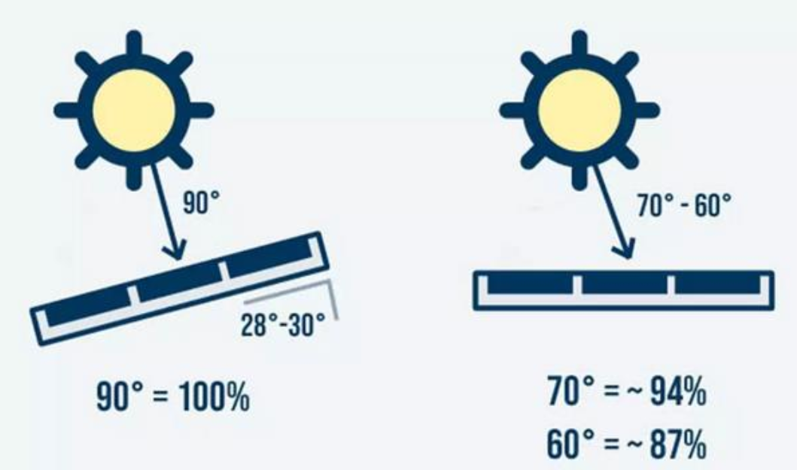
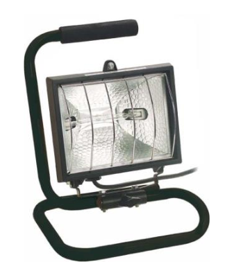
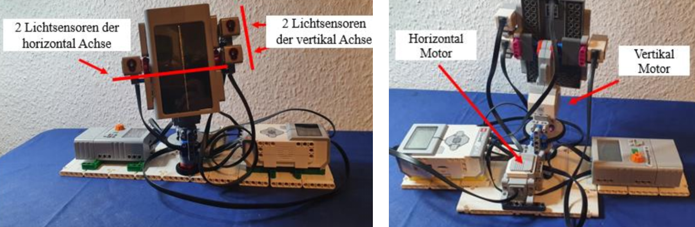
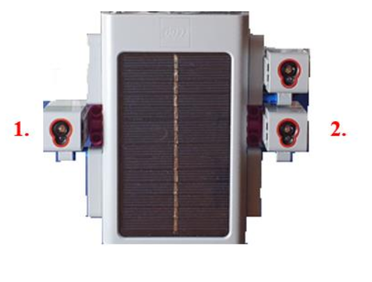
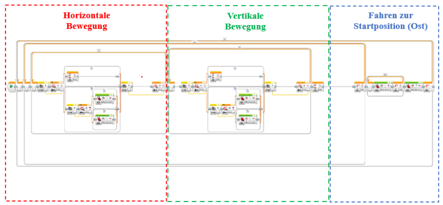
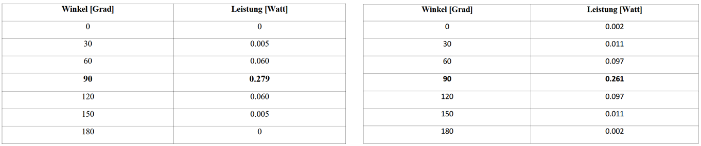

Die optimale Solaranlage
Entwicklung einer automatisch nachgeführten Solaranlage, die sich wie eine Sonnenblume stets zur Lichtquelle ausrichtet, um die maximale Stromerzeugung zu erreichen.
Projektübersicht
Ziel des Projekts war die Untersuchung, wie eine Solaranlage ihre Ausrichtung automatisch an die Position der Sonne anpassen kann. Dazu wurde ein LEGO-Mindstorms-System mit Sensoren und Motoren entwickelt, das die optimale Position der Solarzelle selbstständig bestimmt.

Die Projektidee
Ausgangspunkt war die Frage, warum Solaranlagen in Hamburg häufig weniger effizient arbeiten als in südlicheren Regionen. Da Solarmodule die höchste Leistung bei einem Einstrahlungswinkel von 90 Grad erreichen, entstand die Idee einer beweglichen Solaranlage, die der Sonne automatisch folgt.

Simulation der Sonne
Um die Sonne unabhängig vom Wetter simulieren zu können, wurde eine leistungsstarke Halogenlampe verwendet. Dadurch konnten verschiedene Positionen der Lichtquelle reproduzierbar getestet werden.

Konstruktion der Anlage
Die Solaranlage wurde mit LEGO EV3 Mindstorms aufgebaut. Zwei Motoren ermöglichen die horizontale und vertikale Bewegung der Solarzelle. Die Konstruktion wurde mehrfach überarbeitet, um Stabilität und Beweglichkeit zu optimieren.

Lichtsensoren
Drei Lichtsensoren messen kontinuierlich die Lichtstärke. Durch den Vergleich der Sensorwerte erkennt das System, in welche Richtung die Lichtquelle liegt und richtet die Solarzelle automatisch aus.
Dadurch kann die Anlage in Echtzeit auf Veränderungen der Lichtposition reagieren und die optimale Ausrichtung beibehalten.

Programmierung
Das Programm vergleicht die Sensorwerte und bewegt die Motoren so lange, bis die Lichtstärke auf beiden Seiten ausgeglichen ist. Dadurch wird die Position mit der höchsten Sonneneinstrahlung gefunden.

Messungen und Ergebnisse
Durch Messungen der Stromerzeugung bei unterschiedlichen Winkeln konnte nachgewiesen werden, dass die höchste Leistung bei einem Einstrahlungswinkel von 90 Grad erreicht wird.
Die entwickelte Solaranlage bestätigte damit die theoretischen Erwartungen und zeigte das Potenzial einer automatischen Sonnennachführung.
Ergebnis
Das Projekt zeigt, dass eine automatisch nachgeführte Solaranlage technisch umsetzbar ist und die Energieausbeute verbessern kann. Durch die Kombination aus Sensorik, Programmierung und Mechanik konnte die optimale Ausrichtung zur Lichtquelle erfolgreich nachgebildet werden.